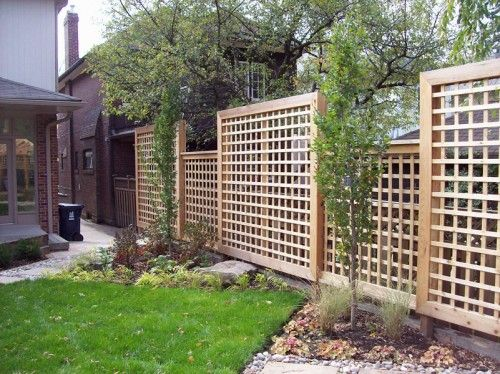
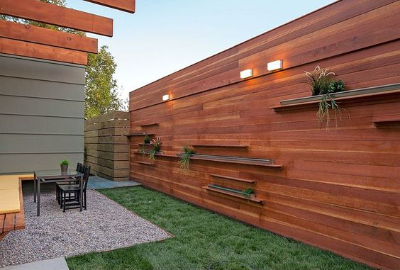

Паркани можуть створити або зіпсувати зовнішній вигляд Вашого будинку з вулиці. Їх призначення не тільки для безпеки Вашого простору і позначення меж, стіни паркану тепер широко використовуються в якості обрамлення вашого саду, родзинки для вашого ландшафтного дизайну або в якості фокусу вашого фасаду. Вибір правильного дизайну серед сотень ідей і конструкцій огорожі дуже потрібний. Найкращий паркан - такй, що відповідає стилю домовласника і околиці і забезпечує рішення яке потребне для огорожі.
1. Сучасні чорні горизонтальні рейки
Елегантний, мінімалістський і приголомшливий! Ви ніколи не помилитесь з сумішшю чорної сталі і білого бетону. Простий в обслуговуванні і міцний паркан відображає простоту та стиль.
2. Гратчастий дерев'яний паркан
Заміський паркан - одна з найбільш модних ідей і задумів сьогодні. Теплі кедрові тони горизонтальних дерев'яних планок елегантно доповнюють хромовану раму і номер будинку.
3. Тверді бетонні стіни заднього двору

Оновіть Ваш старий і зношений паркан в цю красиву і стильну стіну. Весь новий шар цементу повинен приховати пошарпані блоки. Просто додайте геометричні лінії для розумного завершення.
4. Вертикальний паркан
Коротко й унікально! Міцний дерев'яний паркан. Кращий варіант для огорож, якщо ви дійсно не хочете приховувати свій передній двір, але все ще хочете, відгородитись від незнайомців.
5. Цегляні і металеві прольоти

Це ідеальне оновлення, якщо у вас вже є бетонний або цегляний паркан. Замініть прольотні секціїї на модні металеві рейки. Коли у вас вже є імпозантна стіна, спробуйте пом'якшити кольору, виберіть модні, але нейтральні відтінки.
6. Огорожа з гравірованою металевою хвірткою

Додайте натяк химерного на досить суворий паркан. Візерунки листя і гілок цієї металевої хвіртки паркана, безумовно, цікаві.
7. Бамбуковий приватний паркан

Органічно і драматично. Цей красивий паркан з бамбуковій рами буде добре виглядати в будь-яких умовах і ландшафтному дизайні. Він забезпечує достатнє покриття і його легко побудувати.
8. Сучасна габіонна стіна
Габіонові стіни належать до найбільш жорстких задумам і дизайнів огорож та існують з часів середньовіччя. Модернізуйте грубу стіну, акуратно складаючи камені, надаючи їм чіткі лінії і форми. Вибирайте красиві кольорові камені з цікавими візерунками.
9. Матовий скляний паркан

Заморожені скляні огорожі - ідеальні решітки приватного життя. Панелі - класні, стильні і привабливі. Гладкі скляні панелі чудово доповнюють необроблені дерев'яні рами і дошки.
10. Сучасний сталевий паркан

Це ідеальний паркан перед двором. Сучасний і стильний. Сталеві чорні піки і її унікальний дизайн ідеально підходять, коли ви хочете дійсно виділитись.
11. Металеві листи та деревообробка
Цей металевий лист і дерев'яна рейка комбо - доступний і утилітарний паркан, і при цьому ще й стильний. Легко підняти, жорстко, і ви можете налаштувати зовнішній вигляд за допомогою кольорів фарби.
12. Білі горизонтальні рейки
Шикарна вишуканість з великою кількістю стилю. Цей повністю білий паркан також є твердим, як цвях. Він простий, довговічний і простий в обслуговуванні.
13. Сучасне огородження з палет
Виділіть заміський шарм на свій задній двір з допомогою цього паркану з палет. Дозвольте натуральним дерев'яним тонам створити достаток квітів у вашому саду.
14. Тверді металеві панелі

Дуже сучасний і вишуканий. Тверді сталеві листи довільної ширини . Творче використання фарби може також перетворити паркан - від суворої присутності до чогось кумедного або чарівного.
15. Дерев'яні рейки і кам'яна стіна

Як щодо поєднання стародавньої габіонної стіни з сучасним дерев'яним парканом? Ви отримуєте дуже привабливий, дуже сучасний і дуже жорсткий паркан!
16. Металеві решітчасті панелі
Металеві решітчасті панелі додають здорову дозу ніжної чарівності до паркана з досить жорстким виглядом. Відмінний варіант для старих сталевих огорож.
17. Матовий чорний паркан
Паркан як чорна дерев'яна фортеця. Простенька стіна з горизонтальних дерев'яних планок практична і функціональна. Сучасний мінімалістський стиль просто привабливий.
18. Сучасний дерев'яний паркан

Стильний, сучасний і яскравий. Монтаж даного паркана дозволяє повітрю вільно проходити крізь нього і забезпечує майже повне покриття.
19. Стіна з витких рослин
Розширте свій сад до свого паркану, побудувавши стіну із зелені. Освіжаючий і пишний паркан говорить про кумедному образі життя і прекрасних традиціях.
20. Вертикальний паркан
Важкі паркани не завжди повинні бути нудними і суворими. Цей чорний вертикальний планшет розбиває монотонність і невблаганну присутність металевих огорож з його образним стилем і дизайном.
21. Приголомшлива відполірована дерев'яна стіна

Це один красивий і захоплюючий паркан. Але, незважаючи на свій тонкий зовнішній вигляд і стильну зборку, ця полірована дерев'яна стіна надійна і міцна.
22. Стовпи з нержавіючої сталі
Іноді вам дійсно не потрібна стіна або паркан. Коли вам пощастить, все, що вам потрібно, це стійки з нержавіючої сталі і зелень, щоб підкреслити ваш передній двір.
23. Захист конфіденційності - Зелена стіна
Гарна стіна чагарнику забезпечує повне покриття, допомагає охолоджувати повітря і коштує дуже мало. Тим не менш, вирощування вашої зеленої стіни може зайняти роки. Тим часом встановіть тимчасовий бар'єр, наприклад дротову або частокілний парканчик.
24. Сучасний чорний залізний паркан

Мінімалістський стиль, який включає чисті лінії, базовий колір і бездоганний дизайн, робить цей ультрасучасний чорний залізний паркан чудовим. Приголомшливий бонус - це сучасні поворотні ворота.
25. Квадратний гратчастий паркан
Химерний і прекрасний. Ця квадратна решітчаста установка ідеально підходить для встановлення меж без закриття оглядів. Ви можете використовувати текстуроване під дерево залізо, алюміній або сталь для більш витривалого паркану.
26. Холодний сірий металевий паркан

Сучасний, крутий і шикарний. Відмінно підходить для огорожі перед двором, де ви можете зберегти свій будинок і показати свій сад. Цей дизайн легко доповнює будь-яке сучасне озеленення.
27. Мінімалістична заміська стіна
Коли двір є продовженням вашого будинку, ваші паркани є вашими вторинними стінами. Хоча зовні в основному рівні і прості, інтер'єр повинен бути приголомшуючим, функціональним і красивим.
28. Решітки і троянди

Цей прекрасний і делікатний вид огорожі також функціональний і жорсткий. Замість дерева слід використовувати більш міцні матеріали, такі як сталь або залізо. Трояндам може знадобитися якийсь час, щоб рости, але як тільки вони встануть, у вас можуть бути роки красивї і ароматної решітки.
29. Сучасна дерев'яна і бетонна стіна

Цей сучасний паркан, плавний і дуже цікавий. Укріплена чорна бетонна стіна фактично відколена посередині і встановлена вертикальними дерев'яними планками. Новаторський стиль та чудовий паркан.
30. Кедрова огорожа і пергола

Коли ви хочете дотримуватися прекрасних традицій та стилю, цей оголений кедровий паркан підійде вам в самий раз. Твердий, добре зроблений і природно чудовий. Ворота перголи ущільнюються в зачаруванні.
31. Класичний білий паркан

Класична біла залізна огорожа - це міська версія білого паркану. Модернізуйте свій класичний залізний паркан, виключивши вигини і інші прикраси. Тримайте це просто з чистими лініями, щоб вирівнятися з сучасним мінімалізмом сьогодні.
32. Перфорований металевий паркан
Перфоровані металеві листи - дотепні, винахідливі і привертають увагу. Ви навіть можете сплести кілька дерев! Це паркан, який перетворить ваш будинок у орієнтир.
33. Дерево і чорне залізо
Розкішний стиль та чудові кольори. Цей ліс і чорний залізний паркан повні драми і таланту. Підходить для тих, хто не може дотримуватися загального і нейтрального мінімалізму.
34. Бамбуковий садовий хедж
Живі рослини бамбука можуть забезпечити покриття і встановити межі, як і будь-який інший паркан. Бамбуки ростуть швидше, ніж інші рослини. Тим не менше, ці вертикально зростаючі рослини також є травою і можуть бути багаторічними, технічне обслуговування потрібно, якщо ви не хочете, щоб насадження зазіхало на ваш простір.
35. Горизонтальний дерев'яний паркан
Горизонтальні дерев'яні стовпи захищають двір, не закриваючи вигляд. Ідеально підходить для бігу собак, саду і простору, який ви хочете зміцнити, але не приховувати.
36. Сучасний білий паркан
Парканчики як і раніше залишаються одним з улюблених ідей і конструкцій огорожі. Цей модернізований паркан все ще білий, але з більш сучасною формою та мінімалістської конструкцією.
37. Сучасний кований паркан
Жорсткий, гладкий і ультрасучасний. Чисті лінії, суцільна чорна фарба і сучасні замки. Цей паркан викликає повагу і увагу.
38. Вільностоячі залізні планки

Цей стиль огорож настільки простий, що він виділяється! Межі позначені лінією самостійних залізних планок. Служить меті, і виглядає приголомшливо.
39. Сучасне огородження палетами
Незвичайні дерев'яні палети можуть бути використані для створення чогось неймовірного і функціонального. Цей модерністський і художньо зібраний палетний паркан просто приголомшує.
40. Решітка з хвоща
Хвощ легко вирощувати, не вимагає догляду і привертає увагу. Його дивовижна структура високих глибоких зелених стебел - прекрасні решітки приватного життя. Сучасні сірі плантатори вносять свій внесок в гладкий вигляд цього забірного хвощового парканного ансамблю.
41. Плетені металеві огорожі
Металеві паркани є одними з найбільш популярних ідей і конструкцій огорожі. Їх легко і швидко встановити, вони дуже міцні і гнучкі по стилю і дизайну. Цей простий металевий планшетний паркан стає особливим з його плетеною конструкцією.
42. Стіна конфіденційності в стилі Лувр

Цей масивний дерев'яний паркан виділяє східний шарм і стабільність. Важкі темні деревні породи резонують з міцністю, в той час як похилі жалюзі решітки є відмінними і захоплюючими.
43. Огорожа деревом

Додайте здорову дозу заміського стилю в ваш передній двір з цим низьким сарайним дерев'яним парканом. Получається просто і функціонально.
44. Дротяна сітка і виткі рослини

Правильне моделювання і ваші улюблені виткі рослини з огорожею з дротяної стіки можуть спрацювати. Це міцний, яскравий, доступний і простий в обслуговуванні варіант. Просто поливайте рослини!
45. Сучасний дерев'яний паркан текстурований

Низькі огорожі ідеально підходять, коли ви демонструєте свою галявину перед будинком. Цей сучасний дерев'яний текстурований паркан вже приголомшує сам по собі, але також створить і підкреслить красивий ландшафтний передній двір.
46. Чарівний паркан і альтанка

Альтанки - досить хороше доповнення до парканів. Додайте альтанки для більш красивих і характерних парканів.
47. Горизонтальний покладений паркан
Цей хитромудрий паркан, безсумнівно, приверне увагу і благоговіння. Використовуючи дерев'яні чи металеві рейки, штабельована установка є жорсткою і сучасною. Ефективно захищає ваш простір, не блокуючи вигляд.
48. Цегляний і садовий паркан
Додавання вертикального саду різко змінить і модернізує вашу стару основну цегляну стіну. Цей барвистий сад на стінах безумовно привабливий, оскільки він захоплюючий.
49. Горизонтальні пофарбовані дошки
Миттєво оновлювати старі і нудні залізні паркани, просто додаючи пофарбовані дерев'яні дошки.
50. Практичний дерев'яний і бетонний паркан

50 на 50 огорожа є загальновживаною - більш міцний і більш важкий матеріал для нижньої половини, такий як бетон або камінь, і більш легкий і більш декоративний матеріал для верхньої частини. До недавнього часу залізні решітки були фаворитом. Це дерево і бетонна суміш - це сучасна модернізація улюбленого стилю паркану.
51. Вертикальна стіна саду
Перетворіть рівну і забуту стіну, додавши сад! Вертикальний сад з барвистих сукулентів - це те, що вам потрібно, щоб прикрасити просту бетонну стіну.
52. Пофарбована стінка палет

Не багато з них можуть конкурувати з масивною стіною красиво забарвлених піддонів. Повне покриття дає вам повну приватність. Деревний лак захищає деревину від елементів, продовжуючи її вік. Ви також можете вибрати композитні або вінілові матеріали з дерев'яною текстурою для оптимальної довговічності.
53. Бетон і настінні вазони
Додавання вазонів може миттєво оживити ваш твердий бетонний паркан. Рослина легко вирощується, а чагарники з низьким рівнем обслуговування, що знаходяться за межами стіни і всередині - сад з травами. Весело, яскраво і нешкідливо для навколишнього середовища.
54. Сучасні сталеві панелі виготовлені лазерною різкою

Міський, ультрасучасний і урбаністичний. Цей паркан з сталевих високо точної лазерної різки уособлює динамічний та інноваційний шарм.
55. Дерев'яний паркан для саду з піддонів
Це легкий і блискучий проект огородження для вихідних. Візьміть кілька дерев'яних піддонів, станьте на бік і забезпечте стабільність або просто складіть їх, вам навіть не доведеться їх розбирати! Потім створіть кишені і завантажте свої улюблені рослини. У тебе є сад і паркан.
56. Огорожа з плетеної лози

Паттерн витої лози для кошика з дерева або деревяного текстурованого матеріалу захоплюючий і чіткий. Дуже оригінально.
57. Паркан із червоної пікету
Коли ви любите свій паркан, і не можете придумати, як його замінити, просто поміняйте традиційний білий на приголомшливий червоний колір! Весело, обурливо стильно і просто грандіозно.
58. Низькопрофільний бетонний паркан
Сучасний і заміський, поетапне розміщення низьких стін забезпечує покриття без зазорів воріт. Дерев'яна деталь відповідає будинку і легко підсвічує номер будинку.
59. Сучасна і пишна стіна саду

Перетворіть свій двір в абсолютний оазис. Вода, дерево і рослини. Цей сад, натхненний дзен, просто чудовий.
60. Креативна стіна для огорожі
Якщо у вас немає місця для саду, використовуйте свій паркан. Ця творча стіна паркану включає деревину, сталь і зелень для захоплюючої увагу і дивовижної стіни саду.